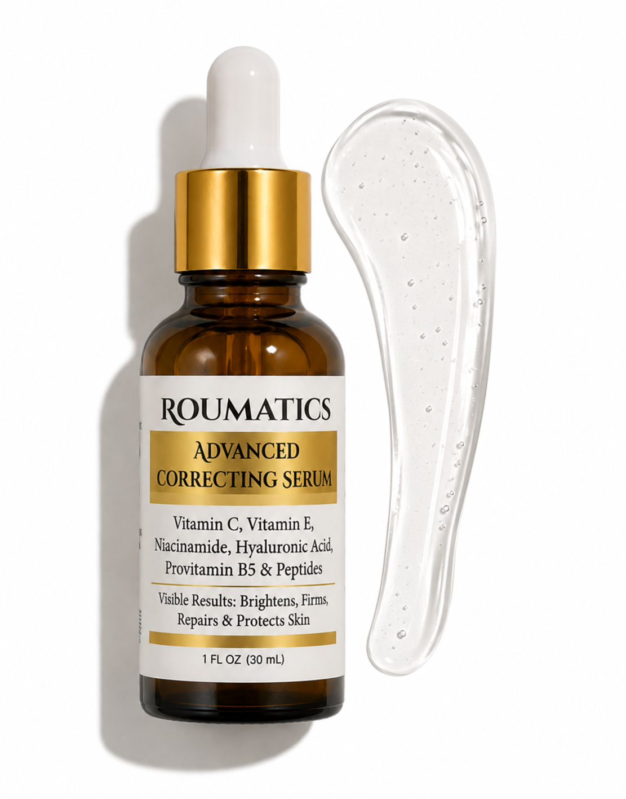
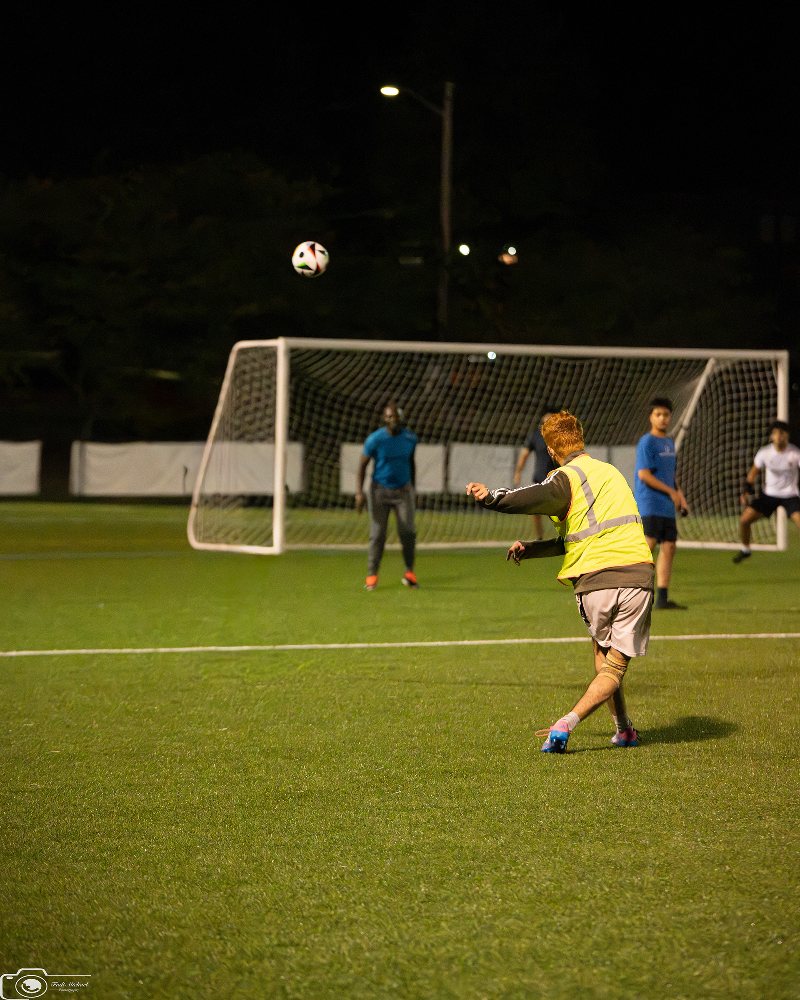
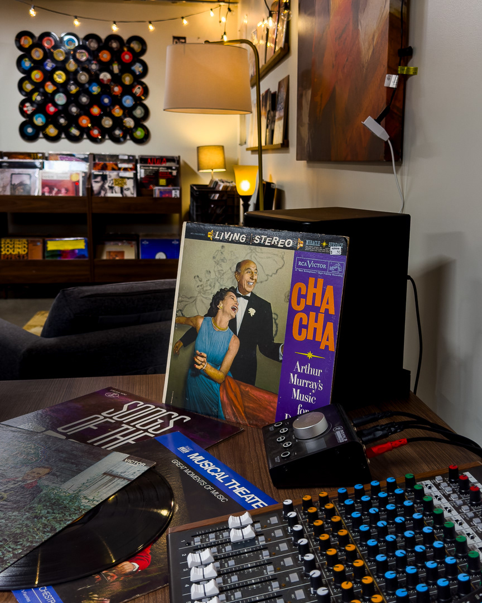
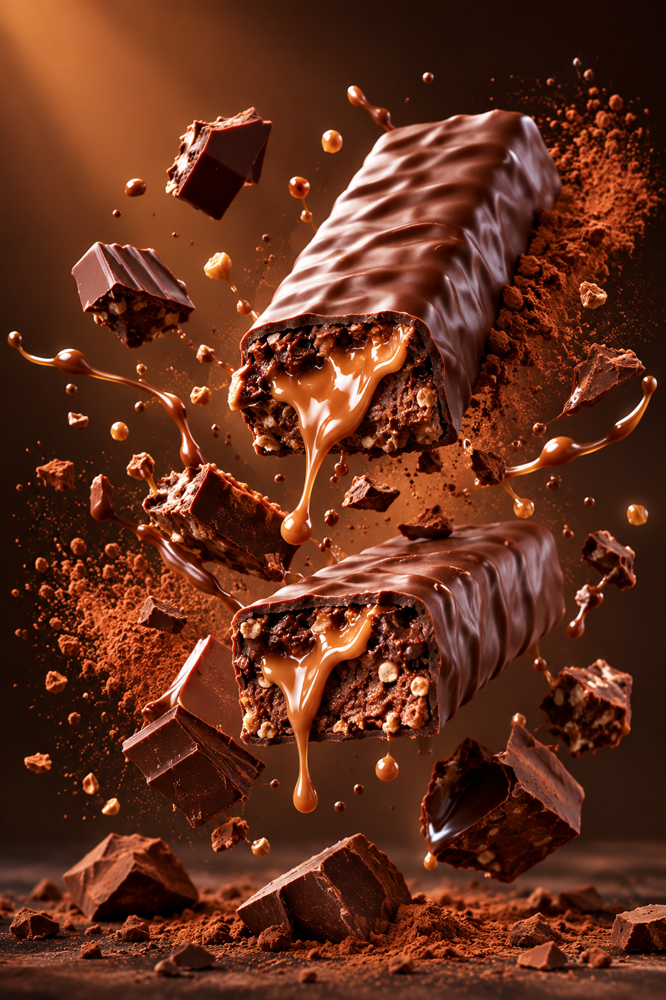
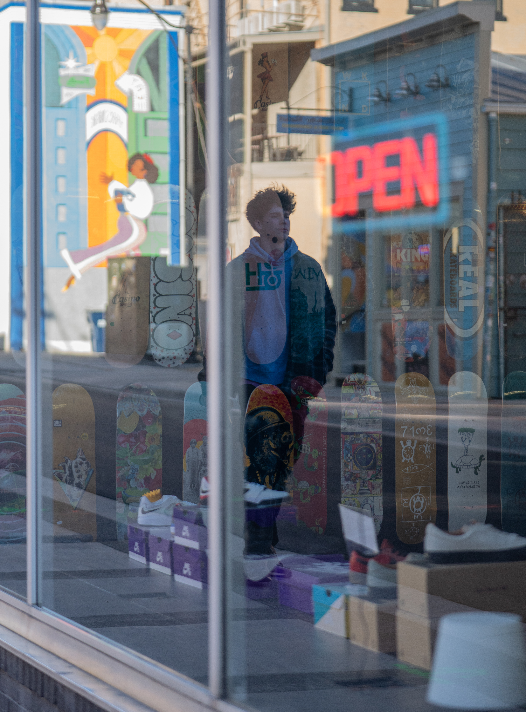
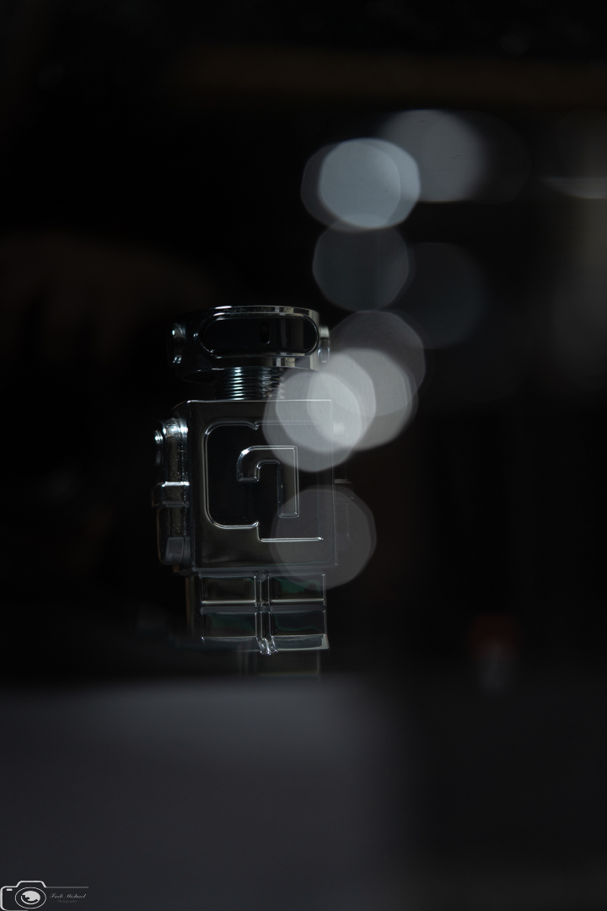

Branding
Designed premium product visuals and advertising concepts for ROUMATICS, creating luxury mockups that brought the brand's identity to life.
Portfolio — est. 2026
A multidisciplinary professional based in United States. I move comfortably between strategy, design and execution — and I care most about the part where it works.
See selected work9 projects

Designed premium product visuals and advertising concepts for ROUMATICS, creating luxury mockups that brought the brand's identity to life.
Captured graduation portraits that celebrate each graduate's personality and achievement.

A mix of studio and street portraits that capture genuine personality and emotion.

Created promotional designs and captured game-day photos for the EMU Soccer Club.

Managed social media, promoted events, and helped market Rhythm & Vinyl in-store and online.

Managed social media, promoted events, and helped market Rhythm & Vinyl in-store and online.

Capturing authentic moments and everyday stories through candid street photography.

Creating clean and visually engaging product images that highlight details, design, and brand identity

I'm a visual storyteller and builder based in the US. My work spans photography, graphic and product design, video editing, and building websites — including this one, which I coded from scratch, line by line. I don't just imagine ideas; I make them.
My background in marketing shapes everything I create. A photo, a product, a video, or a webpage isn't finished when it looks good — it's finished when it connects with people and moves them to act. This portfolio is my journey, my range, and the standard I hold my work to.
I develop marketing strategies that help brands connect with their audience through thoughtful branding, campaign planning, and digital marketing.
I create clean, modern visuals including logos, social media content, advertisements, and brand assets that communicate a consistent identity.
I produce professional product and lifestyle photography, combining lighting, composition, and editing to create visuals that capture attention.
I build responsive websites using HTML, CSS, and JavaScript, focusing on user experience, performance, and modern design principles.